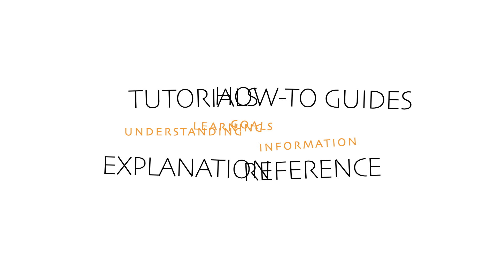
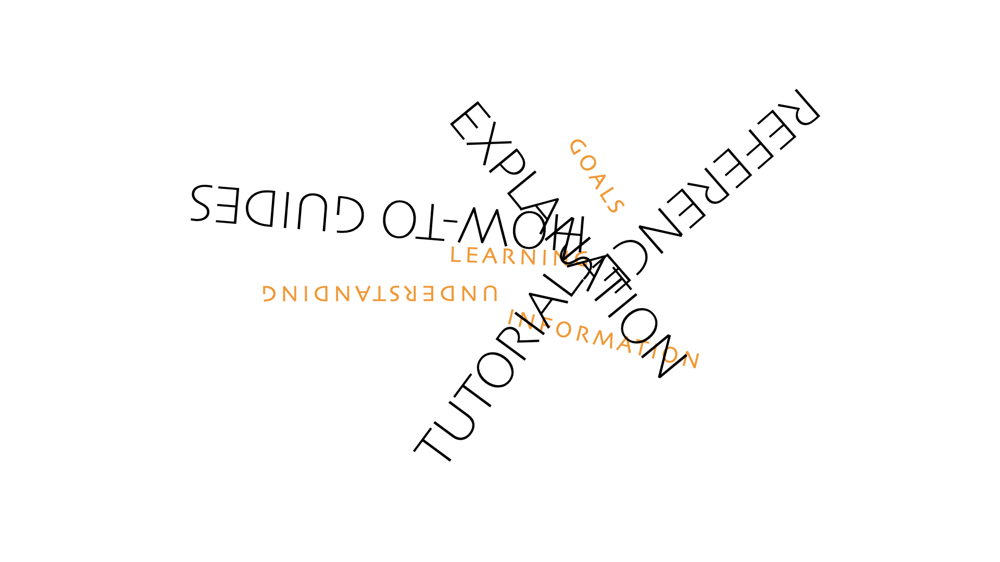
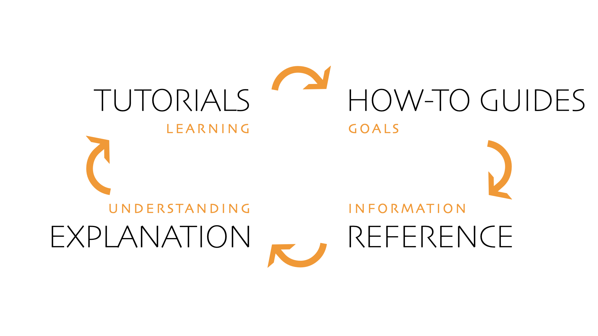

The map¶
One reason Diátaxis is effective as a guide to organising documentation is that it describes a two-dimensional structure, rather than a list.

It specifies its types of documentation in such a way that the structure naturally helps guide and shape the material it contains.
As a map, it places the different forms of documentation into relationships with each other. Each one occupies a space in the mental territory it outlines, and the boundaries between them highlight their distinctions.
The problem of structure¶
When documentation fails to attain a good structure, it’s rarely just a problem of structure (though it’s bad enough that it makes it harder to use and maintain). Architectural faults infect and undermine content too.
In the absence of a clear, generalised documentation architecture, documentation creators will often try to structure their work around features of a product.
This is rarely successful, even in a single instance. In a portfolio of documentation instances, the results are wild inconsistency. Much better is the adoption of a scheme that tries to provide an answer to the question: how to arrange documentation in general?
In fact any orderly attempt to organise documentation into clear content categories will help improve it (for authors as well as users), by providing lists of content types.
Even so, authors often find themselves needing to write particular documentation content that fails to fit well within the categories put forward by a scheme, or struggling to rewrite existing material. Often, there is a sense of arbitrariness about the structure that they find themselves working with - why this particular list of content types rather than another? And if another competing list is proposed, which to adopt?
Expectations and guidance¶
A clear advantage of organising material this way is that it provides both clear expectations (to the reader) and guidance (to the author). It’s clear what the purpose of any particular piece of content is, it specifies how it should be written and it shows where it should be placed.
what they do |
introduce, educate, lead |
guide |
state, describe, inform |
explain, clarify, discuss |
|---|---|---|---|---|
answers the question |
「Can you teach me to…?」 |
「How do I…?」 |
「What is…?」 |
「Why…?」 |
oriented to |
learning |
goals |
information |
understanding |
purpose |
to provide a learning experience |
to help achieve a particular goal |
to describe the machinery |
to illuminate a topic |
form |
a lesson |
a series of steps |
dry description |
discursive explanation |
analogy |
teaching a child how to cook |
a recipe in a cookery book |
information on the back of a food packet |
an article on culinary social history |
Each piece of content is of a kind that not only has one particular job to do, that job is also clearly distinguished from and contrasted with the other functions of documentation.
Blur¶
Most documentation systems and authors recognise at least some of these distinctions and try to observe them in practice.

However, there is a kind of natural affinity between each of the different forms of documentation and its neighbours on the map, and a natural tendency to blur the distinctions (that can be seen repeatedly in examples of documentation).
guide action |
tutorials |
how-to guides |
|---|---|---|
serve the application of skill |
reference |
how-to guides |
contain propositional knowledge |
reference |
explanation |
serve the acquisition of skill |
tutorials |
explanation |
When these distinctions are allowed to blur, the different kinds of documentation bleed into each other. Writing style and content make their way into inappropriate places. It also causes structural problems, which make it even more difficult to maintain the discipline of appropriate writing.

In the worst case there is a complete or partial collapse of tutorials and how-to guides into each other, making it impossible to meet the needs served by either.
The journey around the map¶
Diátaxis is intended to help documentation better serve users in their cycle of interaction with a product.
This phrase should not be understood too literally. It is not the case that a user must encounter the different kinds of documentation in the order tutorials > how-to guides > technical reference > explanation. In practice, an actual user may enter the documentation anywhere in search of guidance on some particular subject, and what they want to read will change from moment to moment as they use your documentation.
However, the idea of a cycle of documentation needs, that proceeds through different phases, is sound and corresponds to the way that people actually do become expert in a craft. There is a sense and meaning to this ordering.

learning-oriented phase: We begin by learning, and learning a skill means diving straight in to do it - under the guidance of a teacher, if we’re lucky.
goal-oriented phase: Next we want to put the skill to work.
information-oriented phase: As soon as our work calls upon knowledge that we don’t already have in our head, it requires us to consult technical reference.
explanation-oriented phase: Finally, away from the work, we reflect on our practice and knowledge to understand the whole.
And then it’s back to the beginning, perhaps for a new thing to grasp, or to penetrate deeper.